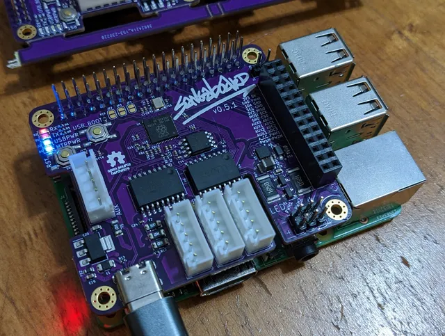
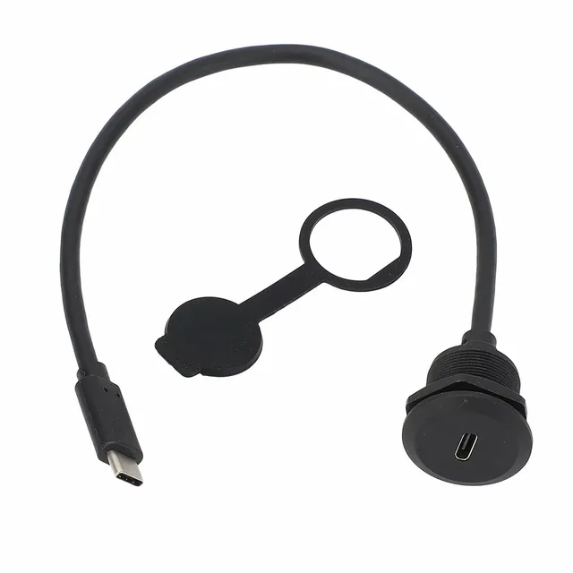

Обновления получает только программа v3: у стабильной v2.11 OpenFlexure прямо пишет «старая ОС, обновлений больше нет». Для v3 нужны Raspberry Pi 4 от 4 ГБ и камера v2 — они уже есть в закупке — и фирменная плата моторов Sangaboard v0.5. Arduino Nano v3 не поддерживает.
Та же плата закрывает вопрос с проводами. Моторы втыкаются в её разъёмы, плата подсветки — двумя готовыми проводами, а Raspberry Pi питается через неё от одного блока USB-C. Ни резать, ни паять ничего не нужно.
£28Sangaboard у TauLab, но в Россию не отправляют
0резов и паек на столе и в боксе
1блок питания USB-C на весь микроскоп
3 667 ₽докупить для бокса без резки
Главное
Готовую плату в Россию не продают
TauLab, основной продавец, не отправляет в Россию: в списке из 239 стран доставки при оформлении заказа её нет. IO Rodeo отправляет только по США.
Реальный путь
Заводская сборка по открытым файлам
В официальном репозитории лежат файлы для завода: плата, список компонентов, координаты монтажа. Монтаж делает, например, российский Резонит. Паять самому не нужно.
Прошивка
Файл UF2 через кнопку
Новая плата прошивается копированием файла UF2, как флешка: зажать кнопку USB_BOOT и подключить к компьютеру. Сервер v3 требует прошивку не ниже 1.0.4.
1Зачем v3 и что ей нужно
v3.0.0 (beta)
v2.11.0 (стабильная)
Обновления
современная ОС, активная поддержка
старая ОС, обновлений больше нет
Возможности
автоматическое сканирование с живым просмотром, новый интерфейс
больше вариантов железа и расширения v2
Raspberry Pi
только Pi 4 от 4 ГБ, Pi 5 не поддерживается
Pi 2–4, Pi 5 не поддерживается
Плата моторов
только Sangaboard v0.5; поддержку обходных плат обещают позже
Sangaboard или обходная плата на Arduino Nano
Расширения
пока нет, обещают
есть
Про версию прошивки. На странице установки написано «Sangaboard v0.5 с прошивкой v1.3 или новее». В репозитории прошивки такой версии нет: последняя выпущенная — 1.0.4. В журнале изменений сервера v3 (alpha4) сказано, что он выдаёт ошибку, если прошивка ниже 1.0.4. Значит, рабочая прошивка — 1.0.4 из ветки release.
Обходная плата в будущем. В репозитории прошивки 19.11.2026 появился черновик «прошивка для обходной платы на Raspberry Pi Pico». Когда его выпустят, неизвестно; на Nano рассчитывать для v3 не стоит.
2Где взять Sangaboard v0.5

TauLab, Великобританияв Россию не отправляют
Sangaboard v5 (v0.5) у TauLab
£28 без НДС
собрана и прошита: надеть на Pi, вставить моторы, подсветку и питание
питает Raspberry Pi — один блок USB-C от 3 А на весь микроскоп
до 4 моторов, драйвер стабильного тока для светодиода, 2 канала по 1 А
Репозиторий sangaboard-rp2040, папка jlcpcb: gerbers.zip (плата), bom.csv (компоненты с номерами LCSC), pos.csv (координаты монтажа). Схема — schematic.pdf там же.
2
И файлы платы светодиода
Репозиторий ofm-led, папка panel/jlcpcb (или panel/fab). Это та самая плата из набора подсветки: на ней только светодиод и разъём, стабильный ток даёт Sangaboard.
3
Отдать на завод с монтажом
Файлы рассчитаны на JLCPCB; доставку в Россию на их сайте не подтверждают — это видно только при оформлении. В России производство и монтаж плат делает, например, Резонит; цена — по запросу. Заводы обычно делают несколько плат за заказ.
4
Разъём под Raspberry Pi
У плат TauLab разъём высотой 11 мм. Если завод поставит обычный 8,5 мм, печатайте ящик электроники из папки 6 архива STL (electronics_drawer-pi4_sanga_stack_8.5mm) — так требует документация.
5
Прошить
Прошивка — репозиторий sangaboard-firmware, ветка release (v1.0.4). Файл собирается командой pio run -e pico в PlatformIO; сборка «pico» в этой прошивке и есть Sangaboard v0.5. Зажать кнопку USB_BOOT, подключить плату к компьютеру по USB-C, на появившийся диск скопировать firmware.uf2. Дальше обновления ставятся через расширение Sangaboard.
Оговорка документации. OpenFlexure не советует делать Sangaboard самому без инструментов и опыта: на плате мелкие компоненты для поверхностного монтажа. Это про ручную пайку — при заводском монтаже паять не нужно, остаётся прошить файлом.
Другие продавцы из официального списка. IO Rodeo — только США. LabCrafter — Великобритания и ЕС. PKI Utveckling (Швеция) отправляет и за рубеж, выставляет счёт по письму на info@pkiutv.se. Bongo Tech (Танзания, мейкерспейс, сооснованный автором Sangaboard) и Pin29 (Аргентина) продают наборы и пишут «спросите про другие страны». Отправку в Россию ни у кого из них я не проверял.
3Что поменять в закупке
Позиция
Было (Nano, v2.11)
Для v3
Плата моторов
Arduino Nano + 3 платы ULN2003
Sangaboard v0.5; платы ULN2003 из комплекта моторов не нужны
Подсветка
светодиод 5 мм + резистор, пайка
плата светодиода + 2 провода DuPont мама-мама в разъём CC на Sangaboard
Питание
блок Pi + отдельная USB-зарядка с разрезанным кабелем
один блок USB-C от 3 А в Sangaboard; Gembird 5,1 В 3 А из закупки подходит
Провода моторов
19 проводов DuPont
моторы втыкаются в разъёмы X, Y, Z на плате
Радиаторы
—
для работы в боксе: набор TauLab или клейкие радиаторы (ниже)
Печать
держатели Nano и светодиода
проставка под плату подсветки (добавлена в папку 1 архива), запасные детали — в папке 6
ПО
OpenFlexure v2.11
OpenFlexure v3 (Raspbian-OpenFlexure, Raspberry Pi Imager 2)
Остальное из списка закупки не меняется: Pi 4 на 4 ГБ, камера v2, объектив, линзы, моторы, крепёж, печать из PETG.
С Sangaboard проще оставить Raspberry Pi и плату в ящике подставки, внутри бокса, как в обычном микроскопе. Тогда моторы, подсветка, камера и датчики подключаются короткими штатными проводами, а через стенку проходят только питание и провода к регулятору снаружи.
Можно ли Pi в бокс на 37 °C. Raspberry Pi 4 рассчитан на работу при температуре воздуха 0–50 °C, 37 °C в этих пределах. TauLab прямо пишет про свой набор радиаторов: малый радиатор на стабилизатор Sangaboard полезен при полной мощности в тёплой среде, «например, в инкубаторе». В закупке вместо него — клейкие радиаторы для Pi 4 с Маркета.
Что проходит через стенку. 1) Питание USB-C — через проходной удлинитель с креплением на панель, на 3 А. 2) Провода нагревателя и датчик PT100 — через кабельный ввод к регулятору снаружи. 3) Три провода DuPont от Pi к реле клапана CO₂ — через второй ввод. Длинный шлейф камеры и удлинители моторов больше не нужны.
Соединение
Чем, без резки
Моторы, подсветка, камера
как на столе: штекеры, 2 провода DuPont, шлейф 200 мм
SHT31 × 2 (зонды с наконечниками)
рычажные клеммы типа WAGO 221 → провода DuPont папа-мама → контакты Pi поверх Sangaboard; у второго датчика адрес 0x45 (вывод адреса на питание)
Датчик CO₂, датчик протечки
провода DuPont; если на датчике голые концы — через WAGO
Питание микроскопа
блок USB-C снаружи → проходной USB-C на стенке → Sangaboard
Нагреватель 12 В
его провода через ввод Г1 → винтовые клеммы SSR-25DD; БП 12 В → гнездо DC с клеммником
REX-C100
сеть — шнур с вилкой и свободными концами в клеммы; PT100 — в клеммы
Клапан CO₂
соленоид → клеммы реле; реле ← 3 провода DuPont от Pi через ввод Г2
220 В. Клеммы REX-C100 и вход блоков питания — сетевое напряжение. Если нет опыта, эту часть должен подключить электрик.
Что докупить для бокса без резки
Вместо модулей GY-SHT31-D (у них штырьки не распаяны) — датчики в стальном корпусе с кабелем. Длинный шлейф камеры, удлинители моторов и подставка без Pi в этом варианте не нужны.

Яндекс Маркет
Проходной USB-C на панель, 20 В 3 А
657 ₽
питание микроскопа через стенку бокса: снаружи гнездо с крышкой, внутри штекер